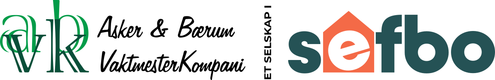
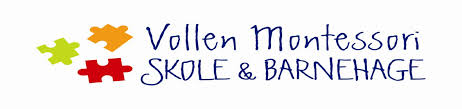

Min arbeidsarfaring
- Instytut Lingwistyki (norsk: Lingvistisk Institutt)
Oppgavene mine går ut på et multum av forskjellige oppgaver, som å prate med studenter og vise dem feilene de gjør i språket samt snakke med dem om forskjellige temaer. I Juli og August 2023 lagde jeg databaser med ord og setninger på norsk og polsk til en app (Google Play og App Store) og filme inn setninger til appen.
Stillingen utnytter min kunnskap av norsk, polsk og engelsk, som er viktig for å kunne lære folk språket. Under dannelsen av databasen til appen var det mye arbeid hver dag, siden det var en nær tidsfrist, og det blandet seg med begynnelesen av skoleåret, men jeg rakk det, som viste min evne til å jobbe under press. Jeg må også svare studentene hver dag, siden det bare kan ta 24 timer mellom deres melding og mitt svar med hva de kan forbedre, selv om jeg gjør andre ting hele dagen, og må derfor klare å finne fram tid til arbeidet.
- Asker & Bærum Vaktmesterkompani
Oppgavene mine gikk ut på å støvsuge hjørnene og kantene der veggen og gulvet møtes i garasjer, siden det var området maskinen som støvsugde gulvet ikke kunne nå. Jeg plukket også søppel, som lå spredt rundt i garasjene.
Jobben var fysisk utmattende, men jeg trengte ikke å bruke hjernen, så jeg så på det som et treningsstudio jeg ble betalt av.

- Vollen Montessori Barnehage (Arbeidsuke)
Oppgavene mine gikk ut på å hjelpe, leke med og passe på barna i barnehagen, samt å vaske og rydde opp når dagen var over.
Jobben var veldig mentalt utmattende siden jeg alltid måtte ha kontroll over hvor barna var, og om de trengte noe. Stillingen viste at jeg klarer å ta ansvar og tenke klart, selv i situasjoner med mange ting å tenke på.
